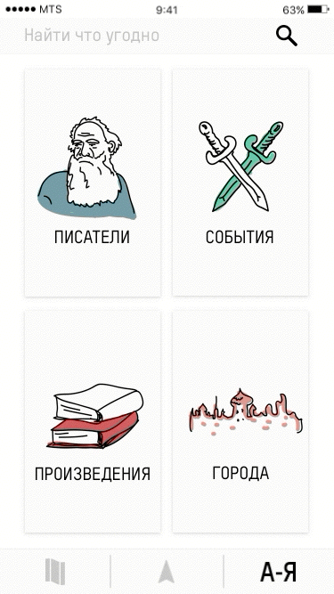

Если хочется найти что-то конкретное, можно использовать архив. Весь материал распределен на 4 категории, в каждой показан в алфавитном порядке списком, а однотипные события собраны в группы.
Например:
—Хочу посмотреть, какие есть события и посмотреть, как они отразились в литературе.
—Жми!
4